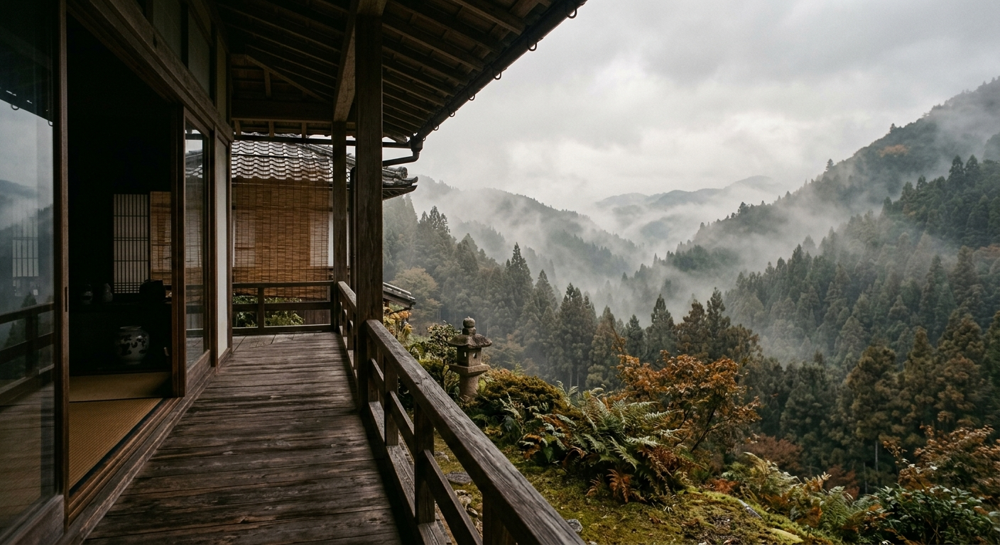

ABOUT YUIAN
都会から、吉野の山へ。
都会で疲れた夫婦が、吉野山の桜を見に来た日から、暮らしの時間は静かに変わり始めました。
朽ちかけていた庄屋邸に出会い、壁の土を塗り、瓦を集め、三年をかけて少しずつ庵を起こしました。
残したのは梁と欄間と土壁。加えたのは、今の暮らしに合う椅子と、夜をやわらげる灯りです。
ここに来てくれた人に、時間を返したい。その思いだけを、今日も湯気にのせてお出ししています。
- 築
- 140年
- 修復
- 3年
- 茶葉
- 18種


庵の四季


「古い家には、時間が住んでいる。」

一日の流れ
結庵で過ごす、ゆるやかな五つの時間。
- お迎えと、最初のお茶 到着されたら、まず一服。山の空気とともに。
- 季節の御膳 吉野本葛と野草を使った、その日だけの一膳。
- 庭を歩く時間 苔と石灯籠の庭を、気の向くままに。
- 蔵席で甘味を 蔵を改めた静かな個室で、葛きりを。
- 帰り際の一服 お土産に、今日の茶葉の名前をお伝えします。
アクセス
簡易ルートマップ（プレースホルダー）
奈良県吉野郡吉野町吉野山（架空番地）
電車でお越しの方
- 近鉄吉野線 吉野駅から車で約15分
- 駅から送迎あり（要事前連絡、無料）
徒歩でお越しの方
- 吉野駅から参道を経由して約30分
- 道中、金峯山寺を通ります
お車でお越しの方
- 西名阪自動車道 郡山ICから約1時間
- 駐車場 4台分あり